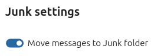
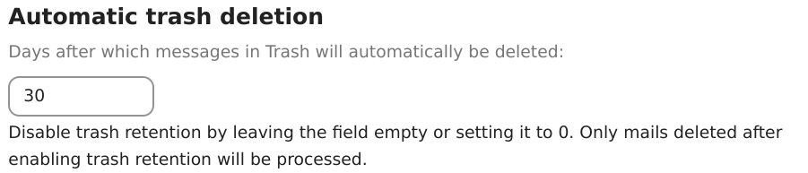

Using the Mail app
Note
The Mail app comes installed with Nextcloud Hub by default, but can be disabled. Please ask your Administrator for it.

Managing your mail account
Switch layout
Added in version 3.6.
Visit mail settings
Choose between List, Vertical split and Horizontal split

Message Display / Operation Mode
Added in version 5.2.
Mail has the ability to switch between two different message view and operation modes: Threaded and Singleton.
In Threaded mode, messages are grouped by conversation. In the mailbox message list, related messages are stacked so only the most recent message is shown, and all relates messages are shown in message display panel after the stacked message is selected. This is useful for following discussions and understanding the context of replies. In this mode, message operation like move and delete apply to the entire thread, meaning that when you move or delete a thread, all messages within that thread are affected.
In Singleton mode, messages are displayed individually, in both the mailbox message list and message display panel and operation like move and delete apply to only the selected message. This mode is useful when you want to manage messages separately without affecting the entire conversation.
Visit mail settings
Choose between Threaded, Singleton

Add a new mail account
Enable mail app from the apps
Click the mail icon on the header
Fill up the login form (auto or manual)

Change sort order
Added in version 3.5.
Visit mail settings
Go to Sorting
You can choose Oldest or Newest mail first
Note
This change will apply across all your accounts and mailboxes
Scheduled messages
Click new message button on top left of your screen
Click the (...) action menu on the modal composer
Click send later

Priority inbox
Priority inbox has 2 section Important and Others. Messages will automatically be marked as important based on which messages you interacted with or marked as important. In the beginning you might have to manually change the importance to teach the system, but it will improve over time.

All inboxes
All messages from all the accounts you have logged in, will be shown here chronologically.
Account settings
Your account settings such as:
Aliases
Signature
Default Folders
Autoresponder
Trusted senders
..and more
Can be found in the action menu of a mail account. There you can edit, add or remove settings depending on your need.
Move messages to Junk folder
Added in version 3.4.
Mail can move a message to a different folder when it is marked as junk.
Visit Account settings
Go to Default folders
Check that a folder is selected for the junk messages
Go to Junk settings
Click Move messages to Junk folder

Search in mailbox
Added in version 2.1.
At the top of the envelope list in any mail layout, there is a search field shortcut for searching email subjects. Starting from version 3.7, this shortcut allows you to search by subject, recipient (to), or sender (from) by default.
Advanced search in mailbox
Added in version 3.4.
You can access our advanced search feature through a modal located at the end of the search shortcut.
Enable mail body search
Added in version 3.5.
Mail bodies can now be searched, this feature is opt-in because of potential performance issues.
To enable it:
Visit Account settings
Go to Mailbox search
Enable mail body search
Warning
If you want to also enable it for unified mailboxes you have to do so in Mail settings
By enabling it the main search box will now search in both subjects and mail bodies, and a separate Body option will appear in advanced search.
Account delegation
The app allows account delegation so that one user can send emails from the address of another.
The delegation has to be configured on the mail server by an admin
Add the other email address as an alias for your own email account
When sending an email, select the alias as sender
Warning
The sent email might not be visible to the original account if it's stored in your personal Sent mailbox.
Automatic trash deletion
Added in version 3.4.
The Mail app can automatically delete messages in the trash folder after a certain number of days.
Visit Account settings
Go to Automatic trash deletion
Enter the number of days after which messages should be deleted
Disable trash retention by leaving the field empty or setting it to 0.
Note
Only mails deleted after enabling trash retention will be processed.

Compose messages
Click new message on the top left of your screen
Start writing your message
Minimize the composer modal
Added in version 3.2.
The composer modal can be minimized while writing a new message, editing an existing draft or a message from the outbox. Simply click the minimize button on the top right of the modal or click anywhere outside the modal.

You can resume your minimized message by clicking anywhere on the indicator on the bottom right of your screen.

Press close button on the modal or the indicator in the bottom right corner to stop editing a message. A draft will be saved automatically into your draft mailbox.
Recipient info on composer
Added in version 4.2.
When you add your first recipient or contact in the "To" field, a right pane will appear displaying the saved profile details of that contact. Adding a second contact will collapse the list, allowing you to select and expand any contact you added to view their details. If you prefer to focus solely on writing in the composer, you can hide the right pane by clicking the expand icon in the top-right corner. To show the right pane again, simply click the minimize icon in the same location.
Mention contacts
Added in version 4.2.
You can mention contacts in your message by typing @ and then selecting the contact from the list.
By doing so the contact will be automatically added as a recipient.
Note
Only contacts with a valid email address will be suggested.
Text blocks
Added in version 5.2.
Text blocks are predefined snippets of text that can be inserted into your email. They can be created and managed in the mail settings.
They can be inserted into the composer by typing ! and then selecting the block from the list or from the composer actions.
Text blocks can be shared with users and user groups.
Outbox
When a message has been composed and the "Send" button was clicked, the message is added to the outbox which can be found in the bottom left corner of the left sidebar.
You can also set the date and time for the send operation to a point in the future (see Scheduled messages)- the message will be kept in the outbox until your chosen date and time arrives, then it will be sent automatically.
The outbox is only visible when there is a message waiting to be handled by the outbox.
You can re- open the composer for a message in the outbox any time before the "send"- operation is triggered.
Note
When an error occurs during sending, three error messages are possible:
- Could not copy to "Sent" mailbox
The mail was sent but couldn't be copied to the "Sent" mailbox. This error will be handled by the outbox and the copy operation will be tried again.
- Mail server error
Sending was unsuccessful with a state than can be retried (ex: the SMTP server couldn't be reached). The outbox will retry sending the message.
- Message could not be sent
Sending might or might not have failed. The mail server can't tell us the state of the message. Since the Mail app has no way to determine the state of the message (sent or unsent) the message will stay in the outbox and the account user has to decide how to proceed.
Mailbox actions
Add a mailbox
Open the action menu of an account
Click add mailbox
Add a submailbox
Open the action menu of a mailbox
Click add submailbox
Shared mailbox
If a mailbox was shared with you with some specific rights, that mailbox will show as a new mailbox with a shared icon as below:
Envelope actions
Create an event
Create an event for a certain message/thread directly via mail app
Open action menu of an envelope
Click More actions
Click Create event
Note
Event title and an agenda is created for you if the administrator has enabled it.
Create a task
Added in version 3.2.
Create an task for a certain message/thread directly via mail app
Open action menu of an envelope
Click more actions
Click create task
Note
Tasks are stored in supported calendars. If there is no compatible calendar you can create a new one with the calendar app.
Change color for tags
Added in version 3.5.

Upon creating a tag, a randomly assigned color is automatically chosen. Once the tag is saved, you have the flexibility to customize its color according to your preferences. This feature can be found on the Tag modal action menu.
Delete tags
Added in version 3.5.

You now have the ability to delete tags that you have previously created. To access this feature:
Open the action menu of an envelope/thread.
Select Edit tags.
Within the tags modal, open the action menu for the specific tag you wish to delete.
Note
Please note that default tags such as Work, To do, Personal, and Later cannot be deleted, they can only be renamed.
AI summary
Added in version 4.2.
When looking through your mailbox you will see a short AI generated summary of your emails as a preview.
Note
Please note that the feature has to be enabled by the administrator
Quick actions
Added in version 5.5: (Nextcloud 30)
Allows you to group action steps that you would normally perform on envelopes such as tagging, moving, marking as read ... into quick actions that can be executed with a single click. Quick actions are scoped to one mail account and can be created and managed in the mail settings under "Quick actions" or directly from the envelope action menu.
Note
Some action steps such as Mark as spam, Move thread and Delete thread are mutually exclusive and cannot be part of the same quick action, they also can't be re-ordered and will always be executed last.
Note
Please note that quick actions will be performed on all messages in a thread when executed on one.
Message actions
Unsubscribe from a mailing list
Added in version 3.1.
Some mailing lists and newsletters allow to be unsubscribed easily. If the Mail app detects messages from such a sender, it will show an Unsubscribe button next to the sender information. Click and confirm to unsubscribe from the list.
Snooze
Added in version 3.4.
Snoozing a message or thread moves it into a dedicated mailbox until the selected snooze date is reached and the message or thread is moved back to the original mailbox.
Open action menu of an envelope or thread
Click Snooze
Select how long the message or thread should be snoozed
Smart replies
Added in version 3.6.
When you open a message in the Mail app, it proposes AI-generated replies. By simply clicking on a suggested reply, the composer opens with the response pre-filled.
Note
Please note that the feature has to be enabled by the administrator
Note
Supported languages depend on the used large language model
Mail translation
Added in version 4.2.
You are able to translate messages to your configured languages similarly to Talk.
Note
Please note that translation features have to be enabled on the server
Note
Since version 5.3, if LLM is enabled by admin, translations will be suggested
Thread summary
The mail app supports summarizing message threads that contain 3 or more messages.
Added in version 3.4.
Note
Please note that the feature has to be enabled by the administrator
Note
Please note that this feature only works well with integration_openai. Local LLMs take too long to respond and the summary request is likely to time out and still create significant system load.
Filtering and autoresponder
The Mail app has a editor for Sieve scripts, an interface to configure autoresponders and an interface to configure filters. Sieve has to be enabled in the account settings.
Autoresponders
Added in version 3.5: Autoresponder can follow system settings.
The autoresponder is off by default. It can be set manually, or follow the system settings. Following system settings means that the long absence message entered on the Absence settings section is applied automatically.
Filter
Added in version 4.1.
Mail 4.1 includes a simple editor to configure filter rules.
Note
Importing existing filters is not supported. However, all existing filters will remain active and unchanged. We recommend backing up your current script through the Sieve script editor as a precaution.
How to Add a New Filter
Open your account settings.
Verify that Sieve is enabled for your account (see Sieve server settings).
Click on Filters.
Select New Filter to create a new rule.
How to Delete a Filter
Open your account settings.
Ensure that Sieve is enabled for your account (see Sieve server settings).
Click on Filters.
Hover over the filter you wish to delete, then click the trash icon.
Conditions
Conditions are applied to incoming emails on your mail server, targeting fields such as Subject, Sender, and Recipient. You can use the following operators to define conditions for these fields:
is exactly: An exact match. The field must be identical to the provided value.
contains: A substring match. The field matches if the provided value is contained within it. For example, "report" would match "port".
matches: A pattern match using wildcards. The "*" symbol represents any number of characters (including none), while "?" represents exactly one character. For example, "report" would match "Business report 2024".
Actions
Actions are triggered when the specified tests are true. The following actions are available:
fileinto: Moves the message into a specified folder.
addflag: Adds a flag to the message.
stop: Halts the execution of the filter script. No further filters with will be processed after this action.
Create a filter from a message
Added in version 5.2.
To create a filter from a given message, open the message and then open the menu by clicking on the three dots. Next, click on "More actions" followed by "Create mail filter."
In the dialog, please select the conditions to match incoming messages and continue by clicking on "Create mail filter."

Follow-up reminders
Added in version 4.0.
The Mail app will automatically remind you when an outgoing email did not receive a response. Each sent email will be analyzed by an AI to check whether a reply is expected. After four days all relevant emails will be shown in your priority inbox.
When clicking on such an email a button will be shown to quickly follow up with all recipients. It is also possible to disable follow-up reminders for a sent email.
Note
Please note that the feature has to be enabled by the administrator.
Security
Phishing detection
Added in version 4.0.
The Mail app will check for potential phishing attempts and will display a warning to the user.
The checks are the following:
The sender address saved in the addressbook is not the same as the one in the mail account
The sender is using a custom email address that doesn't match the from address
The sent date is set in the future
Links in the message body are not pointing to the displayed text
The reply-to address is not the same as the sender address
Note
Please note that the warning does not mean that the message is a phishing attempt. It only means that the Mail app detected a potential phishing attempt.
Internal addresses
Added in version 4.0.
The Mail app allows adding internal addresses and domains, and will warn the user if the address is not in the list, when sending and upon receiving a message.
To add an internal address:
Open the mail settings
Navigate to Privacy and security section
Enable the internal addresses by clicking on the checkbox
Click the Add internal address button
Enter the address or domain and click Add
Dashboard integration
Added in version 1.8.
The mail app offers two widgets designed for integration with Nextcloud's dashboard:
Unread mails: This widget displays unread emails.
Important mails: This widget shows emails that have been flagged as important.
These widgets utilize the emails from the email accounts that are set up for your account.
Calendar integration
The Mail app integrates with the Calendar app to help you manage meeting invitations and keep your calendar up to date.
Meeting invitations
When you receive a message containing a meeting invitation, the Mail app automatically detects the attached calendar file and displays a formatted action section to help you respond.
You can:
Accept the invitation
Decline the invitation
Tentatively accept the invitation
Your response is sent directly from the Mail app, and the event is added to your primary calendar accordingly.
You can also manually add a meeting invitation to a specific calendar:
Open the message with the meeting invitation
Scroll to the bottom of the message to the attachments section
Select the calendar file (usually with a .ics extension), then click the three dots menu.
Click "Import in to calendar" and choose the desired calendar.
Meeting invitation automation
When a meeting organizer sends updates to an existing event (such as time changes or location updates), the Mail app processes these automatically and updates the corresponding event in your calendar.
Added in version 5.7: (Nextcloud 32 or newer)
You can also configure Mail to automatically add all new meeting invitations to your calendar without requiring manual acceptance. The invitations will be added to the calendar as tentative.
To enable this feature:
Visit account settings of a specific mail account
Navigate to Calendar settings section
Enable Automatically create tentative appointments in calendar
Note
With this setting enabled, invitations will still appear in your mail list, but they will be automatically added to your calendar.
Keyboard shortcuts
The Mail app implements several keyboard shortcuts to speed up your experience.
For a full list of the supported shortcuts, check out the Mail settings in your instance.